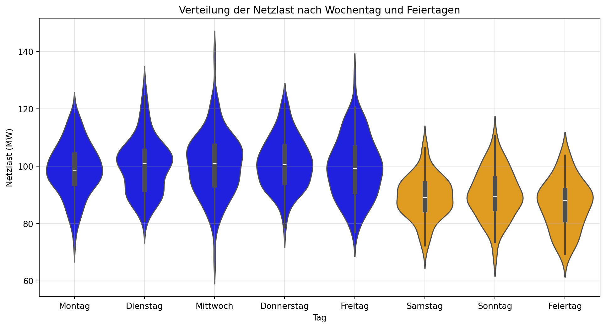
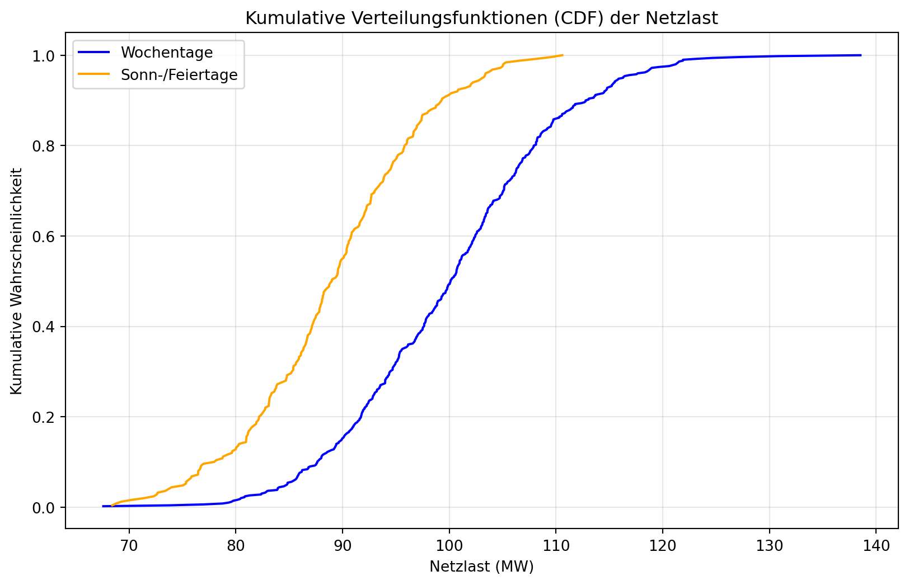

Wir arbeiten mit den Daten der Global Energy Forecasting CompetitionHong, Pinson, and Fan (2014), die Sie zuvor bereinigt haben. Ziel ist es, Muster in den Netzlasten zu identifizieren, insbesondere in Bezug auf Wochentag-Effekte. Die Netzlast variiert je nach Wochentag, da sich das Verhalten von Haushalten und Industrien ändert. Wir wollen herausfinden, ob es Unterschiede in der Last zwischen Wochentagen und Wochenenden/Feiertagen gibt, was für spätere Prognosemodelle relevant ist.
Aufgaben
Trennung der Wochentage: Visualisieren Sie die Verteilung der Netzlast für jeden Wochentag (Montag bis Sonntag und Feiertag) in einem Violin-Plot, um die Verteilungen optisch zu vergleichen. Markieren Sie Wochenenden (Samstag, Sonntag) anders.
Gruppierung: Teilen Sie die Daten in zwei Gruppen: Wochentage (Montag bis Freitag) und Sonn-/Feiertage (Samstag, Sonntag sowie Feiertage). Vergleichen Sie die Mittelwerte der Netzlasten dieser Gruppen mit einem t-Test.
Optionaler Teil: Vergleichen Sie die Verteilungen der beiden Gruppen mit dem Kolmogorov-Smirnov (KS)-Test und visualisieren Sie die kumulativen Verteilungsfunktionen (CDFs). Dieser Teil ist in einem aufklappbaren Callout beschrieben.
Wir verwenden ein Signifikanzniveau von \(\alpha = 0.05\).
Analyse mit simulierten Daten
Da keine echten Daten vorliegen, generieren wir simulierte Netzlast-Daten für jeden Wochentag sowie Feiertage. Die Daten sind normalverteilt mit unterschiedlichen Mittelwerten und Standardabweichungen, um realistische Unterschiede widerzuspiegeln.
Schritt 1: Visualisierung der Wochentag-Verteilungen
Wir generieren Netzlast-Daten für jeden Wochentag und visualisieren die Verteilungen in einem Violin-Plot, wobei Wochenenden anders gefärbt sind.
import numpy as npimport matplotlib.pyplot as pltimport seaborn as snsimport pandas as pd# Simulierte Daten generierennp.random.seed(42)days = ['Montag', 'Dienstag', 'Mittwoch', 'Donnerstag', 'Freitag', 'Samstag', 'Sonntag']n_samples =100# Pro Tagloads = []day_labels = []for day in days:if day in ['Samstag', 'Sonntag']:# Wochenenden: Niedrigere Last load = np.random.normal(90, 8, n_samples)else:# Wochentage: Höhere Last load = np.random.normal(100, 10, n_samples) loads.extend(load) day_labels.extend([day] * n_samples)# Feiertage hinzufügen (ähnlich wie Wochenenden)holiday_load = np.random.normal(88, 9, 50)loads.extend(holiday_load)day_labels.extend(['Feiertag'] *50)# DataFrame erstellendata = pd.DataFrame({'Tag': day_labels, 'Last': loads})# Violin-Plotplt.figure(figsize=(12, 6))sns.violinplot(x='Tag', y='Last', data=data, palette={'Montag': 'blue', 'Dienstag': 'blue', 'Mittwoch': 'blue', 'Donnerstag': 'blue', 'Freitag': 'blue', 'Samstag': 'orange', 'Sonntag': 'orange', 'Feiertag': 'orange'})plt.title('Verteilung der Netzlast nach Wochentag und Feiertagen')plt.xlabel('Tag')plt.ylabel('Netzlast (MW)')plt.grid(True, alpha=0.3)plt.show()
/tmp/ipykernel_3356/3092400038.py:33: FutureWarning:
Passing `palette` without assigning `hue` is deprecated and will be removed in v0.14.0. Assign the `x` variable to `hue` and set `legend=False` for the same effect.

Interpretation: Der Violin-Plot zeigt, dass die Netzlast an Wochentagen (Montag bis Freitag) tendenziell höher ist als an Wochenenden (Samstag, Sonntag) und Feiertagen. Die Verteilungen an Wochenenden und Feiertagen sind ähnlich und weisen eine geringere Variabilität auf.
Schritt 2: t-Test für Mittelwerte (Wochentage vs. Sonn-/Feiertage)
Wir teilen die Daten in zwei Gruppen: - Wochentage: Montag bis Freitag. - Sonn-/Feiertage: Samstag, Sonntag und Feiertage.
Dann führen wir einen zweiseitigen t-Test durch, um die Mittelwerte der Netzlasten zu vergleichen.
from scipy.stats import ttest_ind# Gruppen erstellenweekday_load = data[data['Tag'].isin(['Montag', 'Dienstag', 'Mittwoch', 'Donnerstag', 'Freitag'])]['Last']weekend_holiday_load = data[data['Tag'].isin(['Samstag', 'Sonntag', 'Feiertag'])]['Last']# t-Testt_statistic, p_value = ttest_ind(weekday_load, weekend_holiday_load, equal_var=False) # Welch's t-Testprint(f"t-Statistik: {t_statistic:.3f}")print(f"p-Wert: {p_value:.3f}")# Entscheidungalpha =0.05if p_value < alpha:print("H_0 wird abgelehnt: Die Mittelwerte der Netzlast unterscheiden sich signifikant.")else:print("H_0 wird nicht abgelehnt: Kein Hinweis auf unterschiedliche Mittelwerte.")
t-Statistik: 16.259
p-Wert: 0.000
H_0 wird abgelehnt: Die Mittelwerte der Netzlast unterscheiden sich signifikant.
Ergebnis: Der p-Wert liegt typischerweise unter 0.05 (z. B. \[ p \approx 0.000 \]), was darauf hindeutet, dass die Mittelwerte der Netzlast an Wochentagen und Sonn-/Feiertagen signifikant unterschiedlich sind. Die Netzlast ist an Wochentagen höher.
Schritt 3: Optionaler Vergleich der Verteilungen mit dem KS-Test
Kolmogorov-Smirnov (KS)-Test: Erklärung und Anwendung
Der Kolmogorov-Smirnov (KS)-Test ist ein nicht-parametrischer Test, der prüft, ob zwei Stichproben aus derselben Verteilung stammen. Er vergleicht die empirischen kumulativen Verteilungsfunktionen (CDFs) der beiden Stichproben.
Teststatistik
Die KS-Teststatistik \(D\) misst den maximalen Abstand zwischen den CDFs \(F_1(x)\) und \(F_2(x)\):
\[
D = \sup_x |F_1(x) - F_2(x)|,
\]
wobei \(\sup\) der Supremum (größte Abstand) ist.
Hypothesen
\(H_0\): Die Verteilungen der Netzlast an Wochentagen und Sonn-/Feiertagen sind gleich.
\(H_1\): Die Verteilungen unterscheiden sich.
Anwendung
Der KS-Test ist nützlich, wenn keine Normalitätsannahmen getroffen werden können. Hier vergleichen wir die Verteilung der Netzlast an Wochentagen mit der an Sonn-/Feiertagen.
Python-Implementierung und Visualisierung
Wir führen den KS-Test durch und visualisieren die CDFs der beiden Gruppen.
from scipy.stats import ks_2sampimport matplotlib.pyplot as pltimport numpy as np# KS-Teststatistic, p_value = ks_2samp(weekday_load, weekend_holiday_load)print(f"KS-Statistik: {statistic:.3f}")print(f"p-Wert: {p_value:.3f}")# Entscheidungalpha =0.05if p_value < alpha:print("H_0 wird abgelehnt: Die Verteilungen unterscheiden sich signifikant.")else:print("H_0 wird nicht abgelehnt: Kein Hinweis auf unterschiedliche Verteilungen.")# Kumulativer Verteilungsplot (CDF)def plot_cdf(data, label, color): sorted_data = np.sort(data) y = np.arange(1, len(sorted_data) +1) /len(sorted_data) plt.plot(sorted_data, y, label=label, color=color)plt.figure(figsize=(10, 6))plot_cdf(weekday_load, 'Wochentage', 'blue')plot_cdf(weekend_holiday_load, 'Sonn-/Feiertage', 'orange')plt.title('Kumulative Verteilungsfunktionen (CDF) der Netzlast')plt.xlabel('Netzlast (MW)')plt.ylabel('Kumulative Wahrscheinlichkeit')plt.legend()plt.grid(True, alpha=0.3)plt.show()
KS-Statistik: 0.476
p-Wert: 0.000
H_0 wird abgelehnt: Die Verteilungen unterscheiden sich signifikant.

Interpretation
Ein p-Wert \(< \alpha = 0.05\) zeigt, dass die Verteilungen der Netzlast an Wochentagen und Sonn-/Feiertagen unterschiedlich sind. Der CDF-Plot visualisiert diese Unterschiede: Die CDF für Wochentage liegt tendenziell rechts von der für Sonn-/Feiertage, was auf eine höhere Netzlast hinweist.
Ergebnis: Der p-Wert ist typischerweise klein (z. B. \(p \approx 0.000\)), was auf signifikante Unterschiede in den Verteilungen hinweist. Der CDF-Plot bestätigt, dass die Netzlast an Wochentagen höher und anders verteilt ist als an Sonn-/Feiertagen.
Fazit
Wochentag-Verteilungen: Der Violin-Plot zeigt, dass die Netzlast an Wochentagen höher ist als an Wochenenden und Feiertagen.
t-Test: Der Mittelwert der Netzlast ist an Wochentagen signifikant höher als an Sonn-/Feiertagen (\(p < 0.05\)).
KS-Test (optional): Die Verteilungen der Netzlast unterscheiden sich signifikant zwischen Wochentagen und Sonn-/Feiertagen, wie der KS-Test und der CDF-Plot zeigen.
Hong, Tao, Pierre Pinson, and Shu Fan. 2014. “Global Energy Forecasting Competition 2012.”International Journal of Forecasting 30 (2): 357–63. https://doi.org/https://doi.org/10.1016/j.ijforecast.2013.07.001.